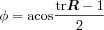

Get rotation matrix from rotation axis and angle.
[n,phi] = rotmat2aqxi(R);
Given a rotation matrix
R, the function rotmat2axi computes the
rotation axis n and the angle of rotation phi
around this axis defining the same rotation.
For details about rotation matrices, see the page on relative orientations.
rotmat2axi computes the components of the rotation axis
vector directly from elements in the rotation matrix:
The rotation angle is given by
The following rotation matrix describes the interchange of the three principal axes of the coordinate system
R = [0 1 0; 0 0 1; 1 0 0]
R =
0 1 0
0 0 1
1 0 0
Feeding this rotation matrix into rotmat2axi,
we obtain the rotation axis and the rotation angle
[n,phi] = rotmat2axi(R)
n =
0.5774
0.5774
0.5774
phi =
2.0944
The rotation is 2π/3 around an axis pointing along the center of the first octant.
ang2vec, erot, rotaxi2mat, vec2ang